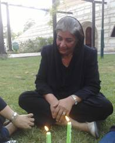

|
|
هاجر رستمی مطلق، مادر ندا آقا سلطان به تنهایی برای ندای ایران سوگواری کرد
پنج شنبه8 مرداد 1388
به خشونت کشیدن شدن مراسم عزاداری برای ندا آقا سلطان در بهشت زهرا
هاجر رستمی مطلق، مادر ندا آقا سلطان به تنهایی برای ندای ایران سوگواری کرد

مادر ندا در پارکی در نزدیک منزل در روز چهلم ندای ایران در تنهایی به سوگ نشست
8 مرداد ماه 1388- به گزارش کمپین بین المللی حقوق بشر در ایران، امروز تجمع مسالمت آمیز هزاران نفر از مردم تهران در قطعه 257 بهشت زهرا که به مناسبت چهلمین روز کشته شدن ندا برگزار شده بود، به خشونت کشیده شد و نیروهای انتظامی امنیتی مانع پیاده شدن آقایان میر حسین موسوی و مهدی کروبی از ماشین و حضور آنها در مراسم شدند. مادر ندا آقا سلطان؛ هاجر رستمی مطلق، که قبلا اعلام کرده بود که برای اولین بار مراسم عزاداری ندا را به مناسبت چهلمین روز درگذشتش بر سر مزار او برگزار خواهد کرد، در آخرین ساعات شب گذشته اعلام کرد که به دلایلی خود و خانواده اش به بهشت زهرا نخواهند رفت.
طبق اطلاعات رسیده به کمپین بین المللی حقوق بشر در ایران، حتی مادر ندا همچنان به دلایلی در محل کشته شدن ندا، که هر پنجشنبه در آنجا حاضر می شود و شمع روشن می کند، حضور نیافته اما در پارک نزدیک محل زندگی خود رفته و به یاد دخترش شمع روشن کرده است.
در طی چندین هفته گذشته، مردمی که هر روزه اجساد عزیرانشان را تحویل می گیرند بی آنکه کسی پاسخگوی مرگ آنها باشد، درصدد برگزاری مراسم عزاداری بودند و به مناسبت چهلمین روز درگذشت ندا آقا سلطان از طریق شبکه های اجتماعی برای حضور بر سر مزار او با هم قرار گذاشته بودند. آقایان موسوی و کروبی که تقاضای آنها برای گرفتن مجوز برگزاری مراسم عزاداری بدون سخنرانی و شعار با مخالفت وزارت کشور مواجه شده بود اعلام کرده بودند که در مراسم چهلم ندا آقا سلطان شرکت خواهند کرد. طبق گزارش های رسیده به کمپین بین المللی حقوق بشر نیروهای انتظامی و امنیتی که از ساعت ها پیش از برگزاری مراسم تمام محوطه بهشت زهرا را پر کرده بودند، با تهدید از حضور آنها در میان مردم جلوگیری کردند.
همچنین گزارش های رسیده حاکی است که مردم از ساعت ها قبل از شروع برنامه برای حضوربر سر مزار ندا در حرکت بودند. اولین بازداشت ها در ساعت 2 بعد ازظهر قبل از حضور جمعیت شروع شد. در میان افراد بازداشت شده جعفر پناهی و همسر و دختر او و سه زن مسن ذکر شده اند. با فشار جمعیت، هزاران نفر از مردم موفق به حضور در قطعه 257 شده و مراسم عزاداری را برگزار کردند. در ساعت حدود 7 بعداز ظهر در حالی که مردم همچنان تمایل به ماندن داشتند، با حمله شدید نیروهای انتظامی مستقر در بهشت زهرا مواجه شدند که از گاز اشک آور استفاده کرده و با باتوم به ضرب و شتم مردم پرداختند. هنوز اطلاعات بیشتری از میزان خشونت وارده به دست کمپین نرسیده است.
هادی قائمی؛ همآهنگ کننده کمپین بین المللی حقوق بشر در ایران در مورد حوادث امروز گفت:"برای هیچکس قابل باور نیست که فرزند کسی را بکشند و بعد هم بدون اینکه پاسخگو باشند به هر روش ممکنی خانواده را وادار کنند که سکوت کند و از برگزاری یک مراسم ساده برای فرزندش محروم شود." هادی قائمی تاکید کرد که "حضور امروز مردم در بهشت زهرا نشان می دهد که مردم در احقاق حقوق خود بسیار مصر هستند. ومسئولین به جای پافشاری برای ادامه جنایت به استناد توهمات باطل خود، باید هر چه سریعتر این واقعیت را درک کنند و صدای مردم را بشنوند."
کمپین بین المللی حقوق بشر در ایران با توجه به ادامه جنایات و عمق این جنایات و عدم پاسخگویی مسئولین، باز هم بر حضور هر چه سریعتر هئیت حقوق بشر سازمان ملل متحد به ریاست دبیر کل سازمان ملل در ایران برای توقف خشونت و بررسی حوادثی که تاکنون در ایران اتفاق افتاده است، تاکید می کند.